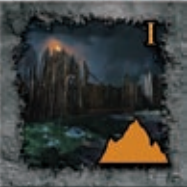
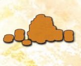

Julgus: Kui mängija asetab Julguse
märgi lauale võib ta valida ühe mängus oleva Kiusatuse
märgi ning selle mängust eemaldada (see naaseb karpi), kuigi ta ei pea seda tegema.
Kiusatus: Kui mängija asetab Kiusatuse
märgi lauale võib ta valida ühe mängus oleva Julguse
märgi ning selle mängust eemaldada (see naaseb karpi), kuigi ta ei pea seda tegema.
Kuninglik Lohesarv:
Märgid lisavad ühe kordaja igale samas reas või veerus olevale nupule juurde. Seega peab Kuningliku Lohesarvega
samas reas või veerus asuva nuppu punktid korrutama ühe asemel kahega, kahe asemel kolmega ja nii edasi.
Märkus: Sama nuppu võivad mõjutada ka mitu Kuningliku Lohesarve märki.
Iga Kuninglik Lohesarv lisab nupu kordajate arvule ühe juurde.
Kuristik: Märgid jagavad oma rea ja/või
veeru kaheks osaks, mille mõlemad pooled loetakse eraldi reaks või veeruks. Tähtis:
Iga osa jagatud reast või veerust on täiesti eraldi teisest osast.Märkus:
Act II laual on kolm Kuristiku märki juba ette trükitud. Nad toimivad samuti nagu mängu asetatud
Kuristiku märgid.
 Mõdu: Märgid saab välja vahetada
Purjutamise märkidega.Märke võib mängu tuua kahel
erineval viisil, millest peab valima ühe, kui märk mängu asetatakse. Esimese võimaluse puhul
saab märgi lauale asetada tavalise tükina. Teise võimalusena võib sellega asendada mängus oleva Purjutamise
märgi. Sellisel juhul naaseb Purjutamise märk karpi (see eemaldatakse mängust).
Mõdu: Märgid saab välja vahetada
Purjutamise märkidega.Märke võib mängu tuua kahel
erineval viisil, millest peab valima ühe, kui märk mängu asetatakse. Esimese võimaluse puhul
saab märgi lauale asetada tavalise tükina. Teise võimalusena võib sellega asendada mängus oleva Purjutamise
märgi. Sellisel juhul naaseb Purjutamise märk karpi (see eemaldatakse mängust). Purjutamine: Märgid saab välja vahetada
span>Mõdu märkidega. Märke võib mängu tuua kahel erineval viisil,
millest peab valima ühe, kui märk mängu asetatakse. Esimese võimaluse puhul saab märgi lauale asetada
tavalise tükina. Teise võimalusena võib sellega asendada mängus oleva Mõdu märgi. Sellisel juhul naaseb
Mõdu märk karpi (see eemaldatakse mängust).
märkidega. Märke võib mängu tuua kahel erineval viisil,
millest peab valima ühe, kui märk mängu asetatakse. Esimese võimaluse puhul saab märgi lauale asetada
tavalise tükina. Teise võimalusena võib sellega asendada mängus oleva Mõdu märgi. Sellisel juhul naaseb
Mõdu märk karpi (see eemaldatakse mängust). Reetmine: Märgid tühistavad kõik
positiivse väärtusega märgid samas reas ja veerus. See aga ei hõlma negatiivse
väärtusega märke. Kui Act'i viimane märk on asetatud lauale tuleb enne nuppude lugemist kõik Reetmise
märgiga samas reas ja veerus olevad positiivse väärtusega märgid pahupidi pöörata; nende märkide väärtus on nüüd null.
 Varandus: Märke võib mängu tuua kahel
erineval viisil, millest peab valima ühe, kui märk mängu asetatakse. Esimese võimaluse puhul
saab märgi lauale asetada tavalise märgina. Teise võimalusena võib märgi eemaldada mängust (pannes selle karpi)
ning koheselt saada märgi varanduse väärtuses (mis on kirjas Varanduse pildil väikses ringis) arvu võidupunkte.